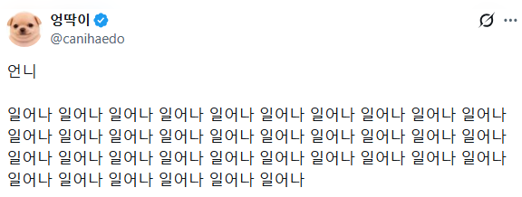

42 · 16 · 3 시간 전 · 원문

수집 당시 댓글 16개
탄산좋아 · 23 시간 전
밥!줘!
포도음료 · 23 시간 전
ㅋㅋㅋㅋㅋㅋㅋㅋㅋㅋ 왠지 귀신같네
FURRY바게 · 3 시간 전
일어났어(벌떡)
니말이맞습니다 · 3 시간 전
뒤졌나?
아는거나오면링크달아줌 · 3 시간 전
된장maxxing
야후한사람 · 3 시간 전
개지랄이 이런건가...
끄으이으응 · 3 시간 전
ㅋㅋㅋㅋㅋㅋㅋㅋㅋ
리비아의개트롤 · 3 시간 전
개새까가 진짜
여울이 · 3 시간 전
된장 풀어라
만원만주십시오 · 3 시간 전
저때 절때 눈뜨면 안됨;
↳ 답글 · SOL반도체TOP2 · 3 시간 전
눈 뜰때까지함 ;;
Rldydhd · 3 시간 전
딱밤마렵네
골목양조장 · 3 시간 전
총각 일어나 총각 자면 안돼 총각~
짜증나면욕함 · 1 시간 전
귀여워
사람의마음이란게없는기가 · 1 시간 전
다주택중과세폐지 · 1 분 전
CPR 저렇게 해야하는데교보재로 써야겟네

밥!
줘!